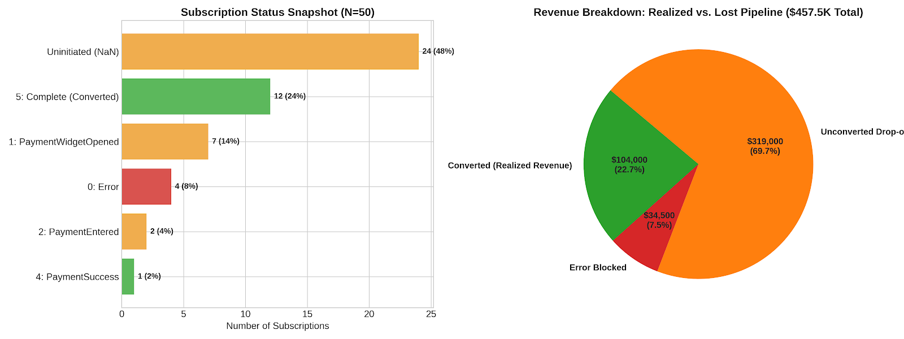

My Projects

Payment Funnel Analysis
This project analyzes payment funnel dynamics and checkout friction for enterprise B2B SaaS subscriptions. Key friction points include uninitiated checkout workflows (48.0% drop-off), payment widget abandonment (14.0% drop-off), and payment processing errors (8.0% directly stuck in error)
View Project
Weather Analysis
Analyzing historical weather data (1969–2026) with summary statistics, temperature trends, precipitation patterns, seasonal breakdown, extreme event detection, long-term climate trend analysis and a correlation heatmap.
View Project